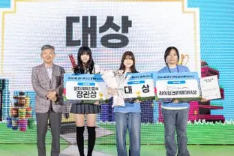
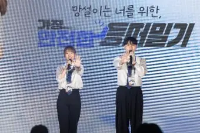

KOSAC
Korea Student Advertising
Competition
메뉴
rocket_launch
KOSAC 소개
ABOUT KOSAC
description
시행요강
REQUIREMENTS
cloud_upload
작품접수
REGISTRATION
photo_library
갤러리
GALLERY
groups
후원사 소개
SPONSORS
campaign
공지사항
NOTICE & NEWS
코삭 갤러리
KOSAC 발표와 시상식 현장을 사진으로 만나보세요.
대회 현장 사진
2026 KOSAC 영코삭 시상식

2026 KOSAC 전국대회 시상식

2026 KOSAC 전국대회 발표 2
2026 KOSAC 전국대회 발표 1
2026 KOSAC 전국대회 현장